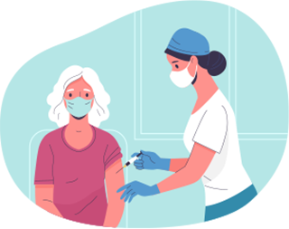

Olá!

SOBRE O SITE
O Sistema Unificado de Vacinação (SUCV) trata-se de um projeto escolar de quatro alunas pertecentes ao Instituto Federal de Educação, Ciência e Tecnologia do Rio Grande do Norte - Campus Caicó (IFRN-CA), e tem como objetivo facilitar e melhorar o acesso à aplicação de vacinas nas unidades básicas de saúde atraves da sistematização destas. A ideia surgiu ao observar problemas recorrentes na cidade na qual moramos, tais como perda do cartão de vacina, pois por se tratar de um documento frágil, pode ser facilmente danificado; e a falta de dados salvos da populaçãp nos postos de saúde dos bairros que pudessem suprir essa perda momentaneamente. A partir disso, o SUCV foi colocado em prática.
DESENVOLVEDORAS